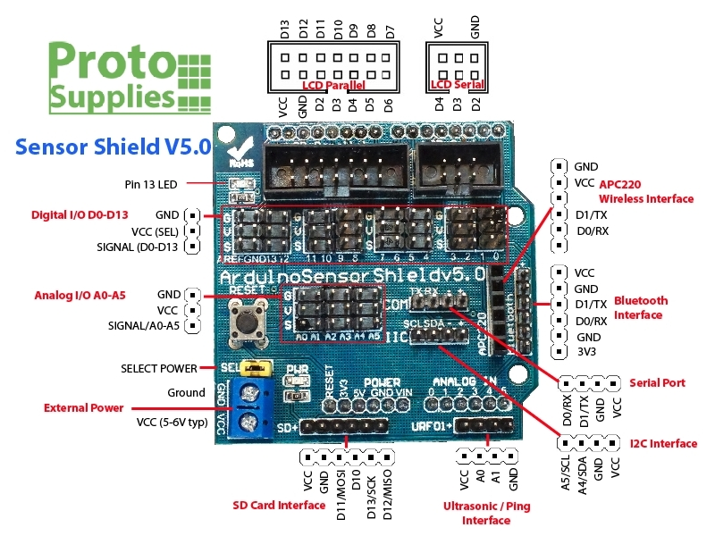

2.6 GRBL CNC firmware
如果需要用Arduino控制一隻stepper motor步進馬達，可以直接用Arduino連接或者用stepper motor driver IC例如A4988。但如果同時要控制2隻或以上的步進馬達，尤其是需要創造基於XYZ結構的機器等，直接使用現有的firmware會更加方便。
GRBL
GRBL是一個開源的CNC機韌體，可以利用ATMega328控制器(即Arduino UNO, NANO等)，配合stepper motor driver 來控制最多3個stepper，輸入上可利用Serial接口，用文字輸入標準GCode來控制機械。現今大行其途的3d打印機，有多個韌體都是繼承自GRBL的。
Getting Start
部分淘寶買的GRBL控制板，使用CH340 driver的Arduino NANO，可能需要安裝driver。

安裝好之後(如有需要)，用usb線連接GRBL板上的Arduino，打開Arduino的serial監示器，或者用其他可以讀取serial的軟件都可以。只要開啟正確的串口後，Arduino會列印出GRBL 1.XX ['$' for help]，告訴你它的版本(至於我的截圖，我也不知為何會有亂碼error，可能是我的版本不是正統grbl吧)
確保右下角的bandrate是115200，文字結尾是NL&CR。在正面的文字輸入列，你可以輸入標準的GCode。
GCode是一種cnc機專用的控制命令語言，由於全部都是代號和數字，所以在一開始閱讀時可能需要邊讀邊查詢，但只要習慣了記住幾個常的的GCode代號，就會發現GCode的本質其實只是一堆座標吧了。
G90/G91
G90是Absolute positioning絕對座標，而G91是incremental positioning增量座標。
學校買回來的繪圖機是沒有homing的極限開關和sensors(可以自行加裝的)，所以預設一開機的任置就是座標(0,0)，而座標系統預設是絕對座標。你可以試一下，在命令列輸入:
x1G0 X10 Y10
系統應該會傳回ok的字樣，X軸和Y軸應該會同一時間移動10mm。跟著再嘗試輸入:
x1G0 X0 Y20
這個系統是絕對座標系統，十分適合用來做繪圖或cnc的輸出。
別一個系統是增量座標系統:
x1G91 (只需要輸入一次)2G0 X10 Y103X-10 Y10
以上這段gcode跟上面的絕對座標輸入的效果是一樣的，只是由絕對座標，變成每次跟據上一次的位置再增量出發。
增量座標適合用來debugs。
G0/G1
上面的gcode中已經出現過，G0就是用機器預設最快的速度到達指定的座標。例如:
xxxxxxxxxx11G0 X10 Y10
如果需要調整機器預設最快速度，可以用:
x
1$110=5000.000(X Max rate, mm/min)2$111=5000.000(Y Max rate, mm/min)3$112=500.000 (Z Max rate, mm/min)如果都是覺得不夠快，未達到預期，好有可能是加速度太低所致
x1$120=1000.000 (X Acceleration, mm/sec^2)2$121=1000.000 (Y Acceleration, mm/sec^2)3$122=10.000 (Z Acceleration, mm/sec^2)
如果是方向反轉了，例如希望+y是下，-y 是上，可以用:
xxxxxxxxxx11$3=2
| Setting Value | Mask | Invert X | Invert Y | Invert Z |
|---|---|---|---|---|
| 0 | 00000000 | N | N | N |
| 1 | 00000001 | Y | N | N |
| 2 | 00000010 | N | Y | N |
| 3 | 00000011 | Y | Y | N |
| 4 | 00000100 | N | N | Y |
| 5 | 00000101 | Y | N | Y |
| 6 | 00000110 | N | Y | Y |
| 7 | 00000111 | Y | Y | Y |
Setting Value為2，即二進制的00000010，對應上表是反轉y軸。
如果想知道現在的設定如何，可以用$$查詢。
G1是用指定的feedrate去到指定的目標，跟其他G0一樣，也可以指定用絕對座標和增量座標。
x
1G912G1 X10 Y10 F10003Y10G1命令和feedrate指定過一次之後，就可以直接輸入座標，無需每次重覆輸入。
當然GCode還有很多其他的命令，而GRBL亦有很多參數可以設定，詳細可參考這裡和這裡。
用另一塊Arduino控制GRBL
效果
用另一塊Arduino控制GRBL板，令其來回行走。
電路
x1Arduino GRBL2Vcc <--> Vcc3GND <--> GND4TX <--> RX5RX <--> TX

細心留意, GRBL板是有標示的。

程式碼
注意: 兩塊Arduino通訊是用硬體serial, 會佔用上傳功能，先上傳程式才接線，或在上傳時暫時斷開tx和rx連接。
x
1unsigned long timer;2boolean direction = true;34void setup() {5 Serial.begin(115200);6 delay(3000);7 //一開始要等待GRBL回應版本表示開始8 9 Serial.println("G91");10 //設定為增量座標11}1213void loop() {14 if (Serial.available()) 15 byte inByte = Serial.read();16 //每次傳送指令後GRBL都會回傳ok, 17 //如果不用read清空serial buffer,18 //經過一段時間後serial buffer就會滿1920 if (millis() - timer >= 500) {21 //這一句配合下面的 timer = millis();組成一個22 //multi-tasking的timer23 24 //這一段才是指令內容==================25 if (direction == true) Serial.println("G0 X20 Y20");26 else Serial.println("G0 X-20 Y-20");27 direction = !direction;28 //這一段才是指令內容==================29 30 timer = millis();31 }32 33}說明
GRBL的板會在收到正確指令時即時回傳ok的，不會理會機器是否到達指定的位置，雖然有方法可以讀取到機器現時的位置來判斷是否執行完指令，但相對較複雜，最好的辦法加一個delay, 但delay會令serial的buffer不能清空，一段時間後會產生問題，所以需要用到multi-tasking timer。